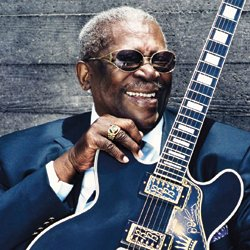
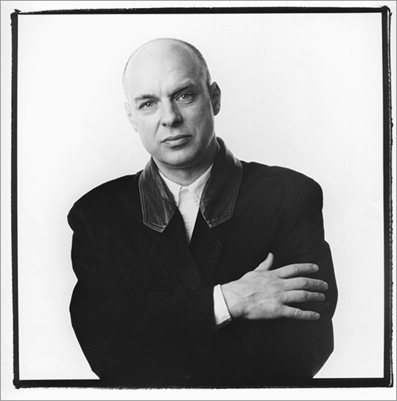

Riley B. King (born September 16, 1925), known by the stage name B.B. King, is an American blues musician, singer, songwriter, and guitarist.
Rolling Stone magazine ranked him at No. 6 on its list of the 100 greatest guitarists of all time (previously ranked No. 3 in the 2003 edition of the same list),[1] and he was ranked No. 17 in Gibson's "Top 50 Guitarists of All Time".[2] According to Edward M. Komara, King "introduced a sophisticated style of soloing based on fluid string bending and shimmering vibrato that would influence virtually every electric blues guitarist that followed."[3] King was inducted into the Rock and Roll Hall of Fame in 1987. He is considered one of the most influential blues musicians of all time, earning the nickname "The King of Blues", and one of the "Three Kings of the Blues Guitar" (along with Albert King and Freddie King).[4][5][6] B.B. King is also known for performing tirelessly throughout his musical career appearing at 250-300 concerts per year until his seventies. In 1956 it was noted that he appeared at 342 shows, and still at the age of 87 King appears at 100 shows a year.
Over the years, King has developed one of the world's most identifiable guitar styles. He borrowed from Blind Lemon Jefferson, T-Bone Walker and others, integrating his precise and complex vocal-like string bends and his left hand vibrato, both of which have become indispensable components of rock guitarists' vocabulary. His economy and phrasing has been a model for thousands of players, from Eric Clapton and George Harrison to Jimmy Page and Jeff Beck. King has mixed blues, jazz, swing, mainstream pop and jump into a unique sound. In King's words, "When I sing, I play in my mind; the minute I stop singing orally, I start to sing by playing Lucille."

Early life
King was born in a small cabin on a cotton plantation outside of Berclair, Mississippi, to Albert King and Nora Ella Farr on September 16, 1925. In 1930, when King was four years old, his father abandoned the family, and his mother married another man. Because Nora Ella was too poor to raise her son, King was raised by his maternal grandmother Elnora Farr in Kilmichael, Mississippi.[7]
King grew up singing in the gospel choir at Elkhorn Baptist Church in Kilmichael. At the age of 12, he purchased his first guitar for $15.00,[7] although another source indicates he was given his first guitar by Bukka White, his mother's first cousin (King's grandmother and White's mother were sisters).[8] In 1943, King left Kilmichael to work as a tractor driver and play guitar with the Famous St. John's Quartet of Inverness, Mississippi, performing at area churches and on WGRM in Greenwood, Mississippi.[9][10]
In 1946, King followed Bukka White to Memphis, Tennessee. White took him in for the next ten months.[7] However, King shortly returned to Mississippi, where he decided to prepare himself better for the next visit, and returned to West Memphis, Arkansas, two years later in 1948. He performed on Sonny Boy Williamson's radio program on KWEM in West Memphis, where he began to develop a local audience for his sound. King's appearances led to steady engagements at the Sixteenth Avenue Grill in West Memphis and later to a ten-minute spot on the legendary Memphis radio station WDIA. King's Spot became so popular, it was expanded and became the Sepia Swing Club.
Initially he worked at WDIA as a singer and disc jockey, gaining the nickname Beale Street Blues Boy, which was later shortened to Blues Boy and finally to B.B.[11][12][13] It was there that he first met T-Bone Walker. "Once I'd heard him for the first time, I knew I'd have to have [an electric guitar] myself. 'Had' to have one, short of stealing!", he said.[14]
1949–2005
In 1949, King began recording songs under contract with Los Angeles-based RPM Records. Many of King's early recordings were produced by Sam Phillips, who later founded Sun Records. Before his RPM contract, King had debuted on Bullet Records by issuing the single "Miss Martha King" (1949), which did not chart well. "My very first recordings [in 1949] were for a company out of Nashville called Bullet, the Bullet Record Transcription company," King recalls. "I had horns that very first session. I had Phineas Newborn on piano; his father played drums, and his brother, Calvin, played guitar with me. I had Tuff Green on bass, Ben Branch on tenor sax, his brother, Thomas Branch, on trumpet, and a lady trombone player. The Newborn family were the house band at the famous Plantation Inn in West Memphis."[15]
Performing with his famous guitar, Lucille
King assembled his own band; the B.B. King Review, under the leadership of Millard Lee. The band initially consisted of Calvin Owens and Kenneth Sands (trumpet), Lawrence Burdin (alto saxophone), George Coleman (tenor saxophone),[16] Floyd Newman (baritone saxophone), Millard Lee (piano), George Joyner (bass) and Earl Forest and Ted Curry (drums). Onzie Horne was a trained musician elicited as an arranger to assist King with his compositions. By his own admission, he cannot play chords well[17] and always relies on improvisation. This was followed by tours across the USA with performances in major theaters in cities such as Washington, D.C., Chicago, Los Angeles, Detroit and St. Louis, as well as numerous gigs in small clubs and juke joints of the southern US states.
In the winter of 1949, King played at a dance hall in Twist, Arkansas. In order to heat the hall, a barrel half-filled with kerosene was lit, a fairly common practice at the time. During a performance, two men began to fight, knocking over the burning barrel and sending burning fuel across the floor. The hall burst into flames, which triggered an evacuation. Once outside, King realized that he had left his guitar inside the burning building. He entered the blaze to retrieve his beloved guitar, a Gibson hollow electric. Two people died in the fire. The next day, King learned that the two men were fighting over a woman named Lucille. King named that first guitar Lucille, as well as every one he owned since that near-fatal experience, as a reminder never again to do something as stupid as run into a burning building or fight over women.
King meanwhile toured the entire "Chitlin' circuit" and 1956 became a record-breaking year, with 342 concerts booked. The same year he founded his own record label, Blues Boys Kingdom, with headquarters at Beale Street in Memphis. There, among other projects, he produced artists such as Millard Lee and Levi Seabury.
In the 1950s, B.B. King became one of the most important names in R&B music, amassing an impressive list of hits including "3 O'Clock Blues",[13] "You Know I Love You," "Woke Up This Morning," "Please Love Me," "When My Heart Beats like a Hammer," "Whole Lotta Love," "You Upset Me Baby," "Every Day I Have the Blues", "Sneakin' Around," "Ten Long Years," "Bad Luck," "Sweet Little Angel", "On My Word of Honor," and "Please Accept My Love." King was extremely busy during this period and made 342 appearances and 3 recording sessions in 1956 alone. In 1962, King signed to ABC-Paramount Records, which was later absorbed into MCA Records, and this hence into his current label, Geffen Records. In November 1964, King recorded the Live at the Regal album at the Regal Theater in Chicago, Illinois.
King won a Grammy Award for a tune called "The Thrill Is Gone";[18] his version became a hit on both the pop and R&B charts, which was rare during that time for an R&B artist. It also gained the number 183 spot in Rolling Stone magazine's 500 Greatest Songs of All Time. He gained further visibility among rock audiences as an opening act on The Rolling Stones' 1969 American Tour. King's mainstream success continued throughout the 1970s with songs like "To Know You is to Love You" and "I Like to Live the Love".
King was inducted into the Blues Hall of Fame in 1980, and inducted into the Rock and Roll Hall of Fame in 1987. In 2004 he was awarded the international Polar Music Prize, given to artists "in recognition of exceptional achievements in the creation and advancement of music."[19]
B.B. King in concert in France 1989
From the 1980s onward he has continued to maintain a highly visible and active career, appearing on numerous television shows and performing 300 nights a year. In 1988, King reached a new generation of fans with the single "When Love Comes to Town", a collaborative effort between King and the Irish band U2 on their Rattle and Hum album. Also that year King played for the 1988 Republican National Convention at the behest of the notorious Republican operative Lee Atwater. King has remained friendly with the Bush Family ever since and in 1990 was awarded the Presidential Medal of the Arts by George H.W. Bush and the Medal of Freedom by George W. Bush in 2008. In 2000, King teamed up with guitarist Eric Clapton to record Riding With the King. In 1998, King appeared in The Blues Brothers 2000, playing the part of the lead singer of the Louisiana Gator Boys, along with Clapton, Dr. John, Koko Taylor and Bo Diddley.
S.V.Rachmaninoff
Sergei Vasilievich Rachmaninoff (Russian: Ñåðãå?é Âàñè?ëüåâè÷ Ðàõìà?íèíîâ;[1] Russian pronunciation: [s??r???ej r?x?man??n?f]; 1 April [O.S. 20 March] 1873 – 28 March 1943) was a Russian-born composer, pianist, and conductor.[2] Rachmaninoff is widely considered one of the finest pianists of his day and, as a composer, one of the last great representatives of Romanticism in Russian classical music.[3] Early influences of Tchaikovsky, Rimsky-Korsakov, and other Russian composers gave way to a thoroughly personal idiom that included a pronounced lyricism, expressive breadth, structural ingenuity, and a tonal palette of rich, distinctive orchestral colors.[4] The piano is featured prominently in Rachmaninoff's compositional output. He made a point of using his own skills as a performer to explore fully the expressive possibilities of the instrument. Even in his earliest works he revealed a sure grasp of idiomatic piano writing and a striking gift for melody.
Childhood and youth
The Rachmaninoff family was a part of an "old aristocracy", where all of the attitude but none of the money remained. The family, of Tatar descent, had been in the service of the Russian tsars since the 16th century, and had strong musical and military leanings. The composer's father, Vasily Arkadyevich (1841–1916), an amateur pianist and army officer, married Lyubov Petrovna Butakova (1853–1929), gained five estates as a dowry, and had three boys and three girls.[5] Sergei was born on 1 April 1873 at the estate of Semyonovo, near Great Novgorod in north-western Russia.[6] When he was four, his mother gave him casual piano lessons,[7] but it was his paternal grandfather, Arkady Alexandrovich, who brought Anna Ornatskaya, a teacher from Saint Petersburg, to teach Sergei in 1882. Ornatskaya remained for "two or three years", until Vasily had to auction off their home due to his financial incompetence—the five estates had been reduced to one; he was described as "a wastrel, a compulsive gambler, a pathological liar, and a skirt chaser"[8][9]—and they moved to a small flat in Saint Petersburg.[10]
Ornatskaya returned to her home, and arranged for Sergei to study at the Saint Petersburg Conservatory, which he entered in 1883, at age ten. That year his sister Sofia died of diphtheria, and his feckless father left the family, with their approval, for Moscow.[5] Sergei's maternal grandmother stepped in to help raise the children, especially focusing on their spiritual life. She regularly took Sergei to Russian Orthodox services, where he was first exposed to the liturgical chants and the church bells of the city, which would later permeate many of his compositions.[10] Another important musical influence was his sister Yelena's involvement in the Bolshoi Theater. She was just about to join the company, being offered coaching and private lessons, but she fell ill and died of pernicious anemia at the age of 18. As a respite from this tragedy, grandmother Butakova brought him to a farm retreat on the Volkhov River, where he had a boat and developed a love for rowing.[5] Having been spoiled in this way by his grandmother, he became lazy and failed his general education classes, altering his report cards, in what Nikolai Rimsky-Korsakov would later call a period of "purely Russian self-delusion and laziness."[11]
In 1885, back at the Conservatory, Sergei played at important events often attended by Grand Duke Konstantin and other important people, but he failed his spring academic examinations and Ornatskaya notified his mother that his admission might be revoked.[5] Lyubov consulted with her nephew (by marriage) Alexander Siloti, already an accomplished pianist studying under Franz Liszt. After appraising his cousin's pianism and listening skills, Siloti recommended that Sergei attend the Moscow Conservatory to study with his own original teacher and disciplinarian, Nikolai Zverev.[12][13]
B.Eno

Brian Peter George St. John le Baptiste de la Salle Eno,[2] RDI[3] (born 15 May 1948 and originally christened Brian Peter George Eno), professionally known as Brian Eno or simply as Eno,[4] is an English musician, composer, record producer, singer, and visual artist, known as one of the principal innovators of ambient music.[5]
Eno was a student of Roy Ascott on his Groundcourse at Ipswich Civic College. Then he studied at Colchester Institute art school in Essex, England, taking inspiration from minimalist painting. During his time on the art course at the Institute, he also gained experience in playing and making music through teaching sessions held in the adjacent music school. He joined the band Roxy Music as synthesiser player in the early 1970s. Roxy Music's success in the glam rock scene came quickly, but Eno soon tired of touring and of conflicts with lead singer Bryan Ferry.
Eno's solo music has explored more experimental musical styles and ambient music. It has also been extremely influential, pioneering ambient and generative music, innovating production techniques, and emphasising "theory over practice".[6] He also introduced the concept of chance music to popular audiences, partially through collaborations with other musicians.[7] Eno has also worked as an influential music and album producer. By the end of the 1970s, Eno had worked with David Bowie on the seminal "Berlin Trilogy" and helped popularise the American band Devo and the punk-influenced "No Wave" genre. He produced and performed on three albums by Talking Heads, including Remain in Light (1980), and produced seven albums for U2, including The Joshua Tree (1987). Eno has also worked on records by James, Laurie Anderson, Coldplay, Depeche Mode, Paul Simon, Grace Jones, James Blake and Slowdive, among others.
Eno pursues multimedia ventures in parallel to his music career, including art installations, a newspaper column in The Observer, a regular column on society and innovation in Prospect magazine, and "Oblique Strategies" (written with Peter Schmidt), a deck of cards in which cryptic remarks or random insights are intended to resolve dilemmas. Eno continues to collaborate with other musicians, produce records, release his own music, and write.
Education and early musical career
Brian Eno was born in 1948 at Phyllis Memorial Hospital, Woodbridge, Suffolk, and was educated at St Joseph's College, Birkfield, Ipswich, which was founded by the St John le Baptiste de la Salle order of Catholic brothers (from whom he took part of his name when a student there),[8] at Ipswich Art School in Roy Ascott's Groundcourse and the Winchester School of Art, graduating in 1969. At the Winchester School of Art, Eno attended a lecture by Pete Townshend of The Who about the use of tape machines by non-musicians, citing the lecture as the moment he realized he could make music even though he was not a musician at that point.[9] In school, he used a tape recorder as a musical instrument and experimented with his first, sometimes improvisational, bands. St. Joseph's College teacher and painter Tom Phillips encouraged him, recalling "Piano Tennis" with Eno, in which, after collecting pianos, they stripped and aligned them in a hall, striking them with tennis balls. From that collaboration, he became involved in Cornelius Cardew's Scratch Orchestra. The first released recording in which Eno played is the Deutsche Grammophon edition of Cardew's The Great Learning (rec. Feb. 1971), as one of the voices in the recital of The Great Learning Paragraph 7. Another early recording was the Berlin Horse soundtrack, by Malcom Le Grice, a nine-minute, 2 ? 16 mm-double-projection, released in 1970 and presented in 1971.[10]
Rozy Music
Brian Eno's professional music career began in London, as a member (1971–1973) of the glam/art rock band Roxy Music, initially not appearing on stage with them at live shows, but operating the mixing desk, processing the band's sound with a VCS3 synthesiser and tape recorders, and singing backing vocals. He then progressed to appearing on stage as a performing member of the group, usually flamboyantly costumed. He quit the band on completing the promotion tour for the band's second album, For Your Pleasure because of disagreements with lead singer Bryan Ferry and boredom with the rock star life.[11]
In 1992, he described his Roxy Music tenure as important to his career: "As a result of going into a subway station and meeting Andy [saxophonist Andy Mackay], I joined Roxy Music, and, as a result of that, I have a career in music. If I'd walked ten yards further on the platform, or missed that train, or been in the next carriage, I probably would have been an art teacher now".[12] During his period with Roxy Music, and for his first three solo albums, he was credited on these records only as 'Eno'.
Solo work
Eno embarked on a solo career almost immediately. Between 1973 and 1977 he created four albums of largely electronically inflected pop songs – Here Come the Warm Jets, Taking Tiger Mountain (By Strategy), Another Green World and Before and After Science, though the latter two also contained a number of minimal instrumental pieces in the so-called ambient style. Tiger Mountain contains the galloping "Third Uncle", one of Eno's best-known songs, owing in part to its later being covered by Bauhaus. Critic Dave Thompson writes that the song is "a near punk attack of riffing guitars and clattering percussion, 'Third Uncle' could, in other hands, be a heavy metal anthem, albeit one whose lyrical content would tongue-tie the most slavish air guitarist."[13]
These four albums were remastered and reissued in 2004 by Virgin's Astralwerks label. Due to Eno's decision not to add any extra tracks of the original material, a handful of tracks originally issued as singles have not been reissued ("Seven Deadly Finns" and "The Lion Sleeps Tonight" were included on the deleted Eno Vocal Box set and the single mix of "King's Lead Hat" [which is an anagram of "Talking Heads"] has never been reissued).
During this period, Eno also played three dates with Phil Manzanera in the band 801, a "supergroup" that performed more or less mutated selections from albums by Eno, Manzanera, and Quiet Sun, as well as covers of songs by The Beatles and The Kinks.
In 1972, Eno and Robert Fripp (from King Crimson) utilised a tape-delay system, described as 'Frippertronics', and the pair released an album in 1973 called (No Pussyfooting). The technique involved two Revox tape recorders set up side by side, with the tape unspooling from the first deck being carried over to the second deck to be spooled. This enabled sound recorded on the first deck to be played back by the second deck at a time delay that varied with the distance between the two decks and the speed of the tape (typically a few seconds). The technique was borrowed from minimalist composer Terry Riley, whose similar tape-delay feedback system with a pair of Revox tape recorders (a setup Riley used to call the "Time Lag Accumulator") was first used on Riley's album Music for The Gift in 1963.[14] In 1975, Fripp and Eno released a second album, Evening Star, and played several live shows in Europe.
Eno's new methods of making sound into music called for new ways of notating his compositions. Like some 20th-century composers of "classical" music, he used graphic notation to represent what could not possibly be conveyed by conventional notes on a staff.[citation needed]
Eno was a prominent member of the performance art-classical orchestra the Portsmouth Sinfonia – having started playing with them in 1972. In 1973 he produced the orchestra's first album The Portsmouth Sinfonia Plays the Popular Classics (released in March 1974) and in 1974 he produced the live album Hallellujah! The Portsmouth Sinfonia Live At The Royal Albert Hall of their infamous May 1974 concert (released in October 1974.) In addition to producing both albums, Eno performed in the orchestra on both recordings – playing the clarinet. Eno also deployed the orchestra's famously dissonant string section on his second solo album Taking Tiger Mountain (By Strategy). The orchestra at this time included other musicians whose solo work he would subsequently release on his Obscure label including Gavin Bryars and Michael Nyman. That year he also composed music for the album Lady June's Linguistic Leprosy, with Kevin Ayers, to accompany the poet June Campbell Cramer.
Eno continued his career by producing a larger number of highly eclectic and increasingly ambient electronic and acoustic albums. He is widely credited with coining the term "ambient music",[15] low-volume music designed to modify one's perception of a surrounding environment.
His first such work, 1975's Discreet Music (again created via an elaborate tape-delay methodology, which Eno diagrammed on the back cover of the LP ), is considered the landmark album of the genre. This was followed by his Ambient series (Music for Airports (Ambient 1), The Plateaux of Mirror (Ambient 2), Day of Radiance (Ambient 3) and On Land (Ambient 4)). Eno was the primary musician on these releases with the exception of Ambient 2 which featured Harold Budd on keyboard, and Ambient 3 where the American composer Laraaji was the sole musician playing the zither and hammered dulcimer with Eno producing.
In 1975 Eno performed as the Wolf in a rock version of Sergei Prokofiev's classic Peter and the Wolf. Produced by Robin Lumley and Jack Lancaster, the album featured Gary Moore, Manfred Mann, Phil Collins, Stephane Grapelli, Chris Spedding, Cozy Powell, Jon Hiseman, Bill Bruford and Alvin Lee. Also in 1975, Eno provided synthesisers and treatments on Quiet Sun's Mainstream album alongside Phil Manzanera, Charles Hayward, Dave Jarrett, and Bill MacCormick, and he performed on and contributed songs and vocals to Phil Manzanera's Diamond Head album.